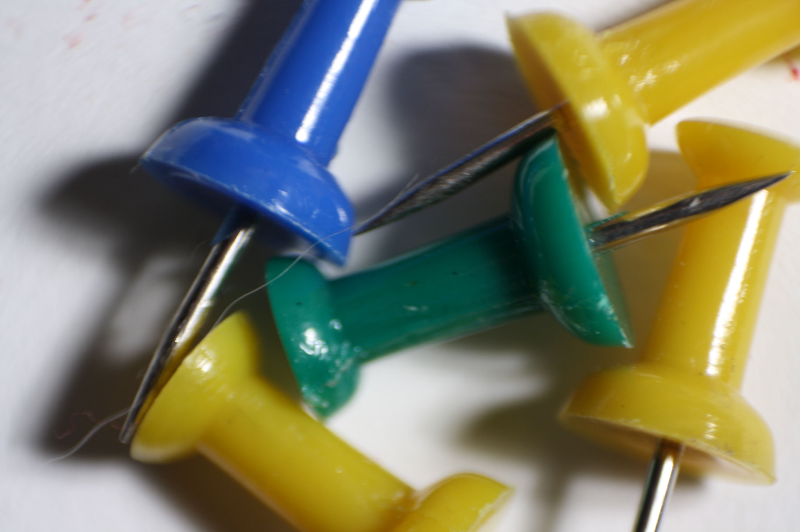
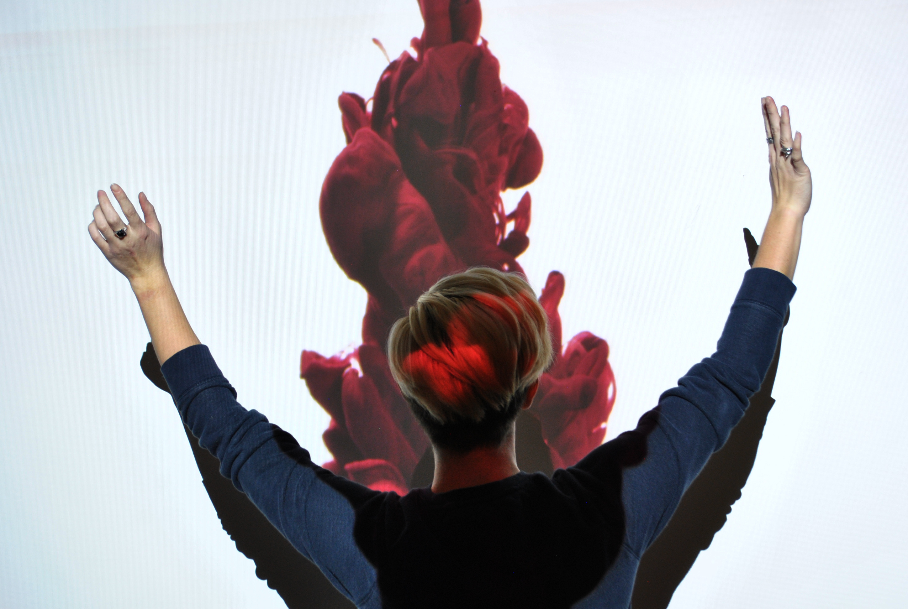

The first Philadelphia Comic Convention since COVID!
This is the first event which returned me to comics. Originally, in 2017, I had other events
occupying my mind.
How will I do on the SAT? Which colleges will I apply to? Am I going to attend prom next year? All
these questions
burdened me. Then, I practiced escapism through videogames, but something was missing.
Returning to an Origin
Initially, when I was visiting friends, we would game in excess.
Rarely did we travel or explore the local scenery around Delaware.
However, one day in July, we decided it was time to plan an outing.
Not just any outing though but one to my first comic show.
The location of the event, which is the same to date, is located at 76 Industrial Hwy
Essington, PA 19029. The building may not look like much, and the event was quite small, but it left
quite an impact on me. Upon entering there was a small fee of $3 but once inside the ballroom was
filled to the brim with numerous vendors.
During the event I found comics I had forgotten about: Ultimate Spider-Man (2000-2009 run), Marvel's
Civil War, and other miscellaneous brands. This was the beginning of a long journey through comics
which I continue to progress through. Without this event in my life I would of never been able
to discover the wonderful world of comics
I used to collect comics; I didn't realize how much I missed this until now!
- Malachi
While the size of the collection rarely matters to those who do not read comic, to collectors and
comic admirers alike, knowing what an individual collects can provide a large insight into who they
are. Personally, I collect from publishers ranging from Marvel and DC to independent companies like
Image, Boom Comics or Skybound.
For reference I enjoy supporting smaller businesses, thus most of my colletion
is from local comic shops.
Additionally, when I refer to my collection there are more than just issues I collect. Usually, for
reading enjoyment I collection
trade paperbacks, which vary in sizes. Plus, some of the material I have collected as well ranges
from Teen to Adult in subject matter.
Comic Collection by Brand
Here are the top three comic series I own:
Publisher
Series
Issue Count
Marvel
Ultimate Spider-Man
131
Image Comics
Walking Dead
47
DC
Batman
53
Total Issues
231
Particually for Batman, I am collecting the Scott Snyder run of stories.
Walking Dead was a series I started partially because of watching the show when I was younger.
Finally,
Ultimate Spider-Man was a series I collected as a kid which I wanted to read in its entirety.
Despite being a STEM based major, I also tend to dabble in art as well when working with a digital
medium.
In short, when the mood strikes I take my DSLR camera that I own and go out into the world and take
photos.
Below are some examples of my work which I took in high school.
Drawing with light using LED colored lights

Closeup of pushpins

Using a projector as an overlay on my model
While these works are dated I am proud to have generated moments as these and miss the process dearly of
creating with friends.
About
Welcome to Restless Midnights - a blog dedicated to
random facts and tidbits that strike me in the middle of the night.